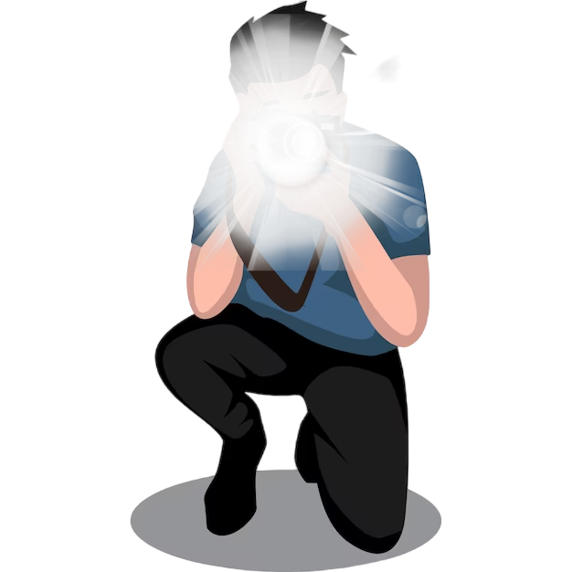
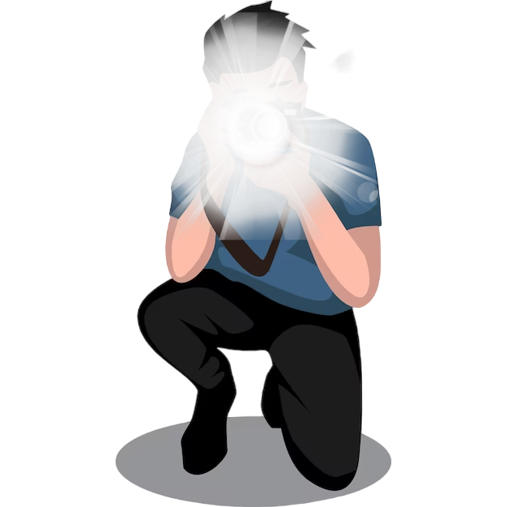
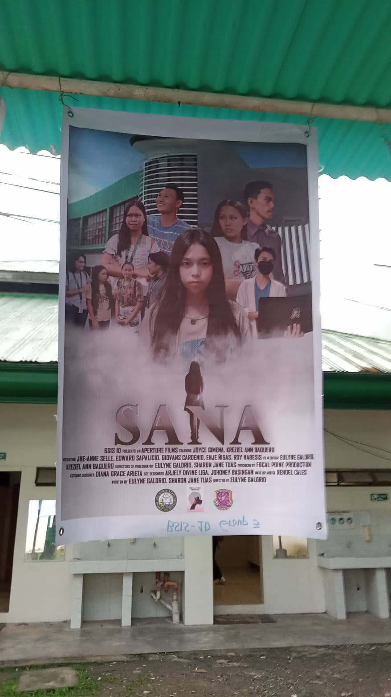

Projects

POSTER

Activity 2
Image Mapping
Hi, I'm Giovan Kier, a passionate photographer, photo editor, video editor, and front-end developer based in Davao del Norte. I embrace the beauty of the world around me, capturing moments that tell compelling stories.
Through my lens, I specialize in landscapes, portraits, and candid moments, skillfully enhancing each image to evoke emotion. My journey as a video editor allows me to bring stories to life through dynamic visuals, seamlessly blending creativity with technology.
In addition to photography and video editing, I’m dedicated to crafting engaging digital experiences as a front-end developer. I strive to create innovative solutions that connect with audiences and enhance their interactions online.
When I'm not behind the camera or immersed in code, I love exploring new places, capturing the essence of my travels, and spending quality time with family and friends. I believe in the transformative power of creativity, whether through stunning visuals or well-designed web interfaces.
I'm excited about the future, eager to learn and grow in my craft, and committed to positively contributing to the world around me.
Thank you for visiting my portfolio! I hope you enjoy exploring my photography, video projects, and web development work!
Image Mapping
The IS Innovations and New Technologies course has been a great way for me to start learning HTML.
It has shown me how websites are built, and I’m really curious about web development now. I’ve been learning the basics of HTML and design, and I can’t wait to see what I can create.
While it can be quite challenging, I find the experience equally enjoyable. At times, the complexity of coding feels overwhelming, especially since it’s not my usual area of interest.
However, the allure of learning HTML and understanding how it all works makes it incredibly tempting to dive deeper.
This course has significantly deepened my understanding of the technologies I've encountered. It has provided me with valuable insights into how these technologies work and their practical applications, ultimately enhancing my academic experience.